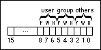
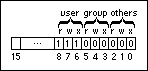

The Set Permissions function includes a permissions input that allows you to control access to files and directories that you create. To define the permissions you want to set, you can wire the permissions output of the Get Permissions function to the permissions input of the Set Permissions function, or you can wire a constant or a control.
The following illustration shows the format of the permissions parameter.

The 9 bits that the permissions parameter uses are divided into three sets: user, group, and others. Each set is divided into three permission categories: read, write, and execute. Read determines if members of a set can read a file or directory. Write determines if members of a set can write data to a file or directory. Execute determines if members of a set can execute the file. A 1 in the bit grants permission.
For example, the following illustration shows how to grant a user permission to read from, write to, and execute a file, and deny permission from the other two sets.

This structure is based on the Linux permission bits that govern read, write, and execute permissions for users, groups, and others.
(Windows) Use of the permissions parameter is very limited on non-Linux operating systems. You can use permissions to change only write permissions for users (bit 7); the operating system ignores all other changes to the bits. Wire the binary value 0 to permissions to deny user write permissions. The operating system grants read and write permissions by default when you create any new file or directory but does not allow you to change read permissions or set permissions for groups or others. Execute permissions do not apply to non-Linux operating systems. Therefore, wiring 0 to permissions modifies only user write permissions for the new file or directory. (Windows) The operating system also ignores permissions when creating new directories. You can use permissions only when creating a new file.
(macOS) The read, write, and execute categories correspond to the See Files, Make Changes, and See Folders access rights, respectively.
You can enter the value for permissions in any numeric format. For example, you can change the numeric format to octal format to shorten the binary number with which you set the file or directory permissions. Octal format shortens each three-bit group within the parameter to a single octal value. (Windows) For example, to make a file writable, enter the octal value 200, which corresponds to the binary representation 10000000. (Linux) To grant users read, write, and execute permissions, enter the octal value 700, which corresponds to the binary value 111000000.